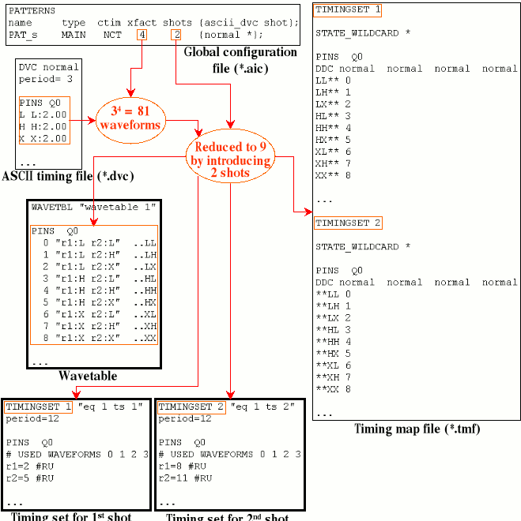

Example 2
This example shows how creation of shots can reduce the total number of waveforms for an output pin with an x-mode factor > 1:

The vector configuration file and the pattern configuration files of this example contain nothing new as compared to Example 1, and are therefore omitted.